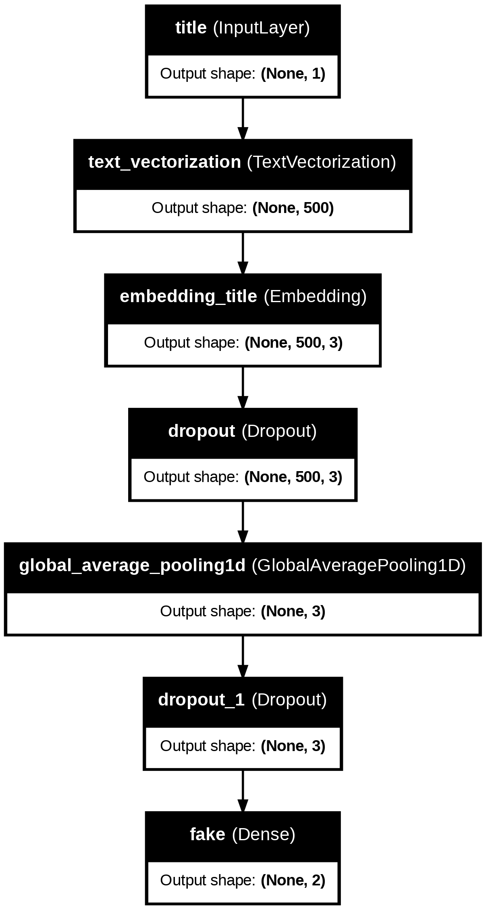
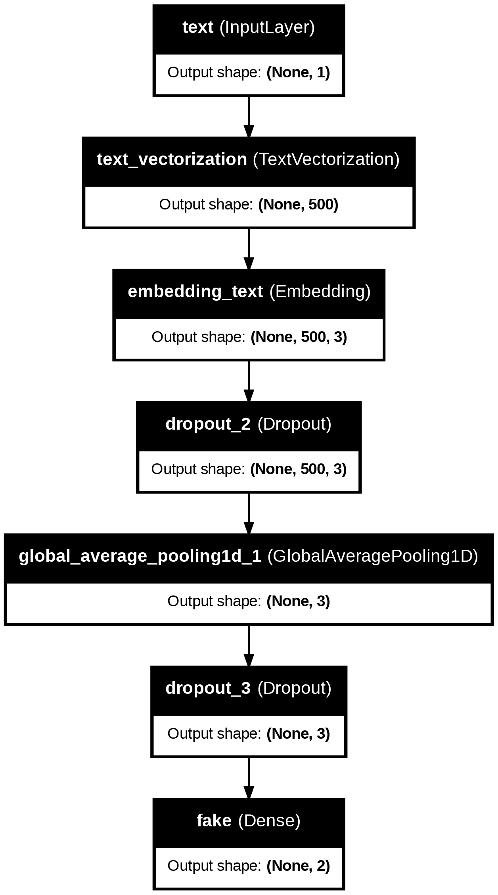
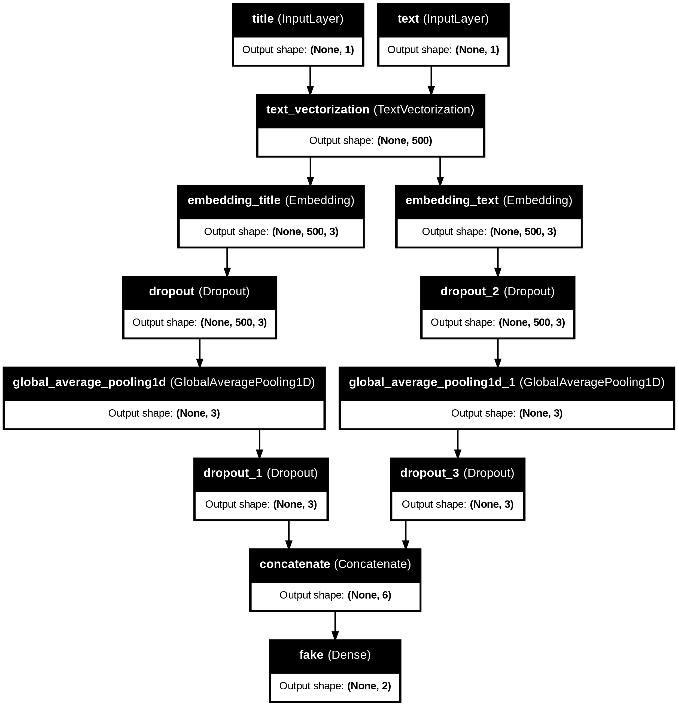

Utilizing Machine Learning and Keras to Identify Fake News
Machine Learning
HW
Author
Narayanan Kannan
Published
March 22, 2024
Introduction
Today, we’re going to sift through loads of news data in an attempt to create a model that can accurately identify “fake news” from a host of articles. To do this, we’re going to use keras and tensorflow to create models for text classification. We’ll use most of the following imports below:
!pip install keras --upgrade
Requirement already satisfied: keras in /usr/local/lib/python3.10/dist-packages (2.15.0)
Collecting keras
Downloading keras-3.1.1-py3-none-any.whl (1.1 MB)
━━━━━━━━━━━━━━━━━━━━━━━━━━━━━━━━━━━━━━━━ 1.1/1.1 MB 19.6 MB/s eta 0:00:00
Requirement already satisfied: absl-py in /usr/local/lib/python3.10/dist-packages (from keras) (1.4.0)
Requirement already satisfied: numpy in /usr/local/lib/python3.10/dist-packages (from keras) (1.25.2)
Requirement already satisfied: rich in /usr/local/lib/python3.10/dist-packages (from keras) (13.7.1)
Collecting namex (from keras)
Downloading namex-0.0.7-py3-none-any.whl (5.8 kB)
Requirement already satisfied: h5py in /usr/local/lib/python3.10/dist-packages (from keras) (3.9.0)
Collecting optree (from keras)
Downloading optree-0.10.0-cp310-cp310-manylinux_2_17_x86_64.manylinux2014_x86_64.whl (286 kB)
━━━━━━━━━━━━━━━━━━━━━━━━━━━━━━━━━━━━━━━━ 286.8/286.8 kB 35.6 MB/s eta 0:00:00
Requirement already satisfied: ml-dtypes in /usr/local/lib/python3.10/dist-packages (from keras) (0.2.0)
Requirement already satisfied: typing-extensions>=4.0.0 in /usr/local/lib/python3.10/dist-packages (from optree->keras) (4.10.0)
Requirement already satisfied: markdown-it-py>=2.2.0 in /usr/local/lib/python3.10/dist-packages (from rich->keras) (3.0.0)
Requirement already satisfied: pygments<3.0.0,>=2.13.0 in /usr/local/lib/python3.10/dist-packages (from rich->keras) (2.16.1)
Requirement already satisfied: mdurl~=0.1 in /usr/local/lib/python3.10/dist-packages (from markdown-it-py>=2.2.0->rich->keras) (0.1.2)
Installing collected packages: namex, optree, keras
Attempting uninstall: keras
Found existing installation: keras 2.15.0
Uninstalling keras-2.15.0:
Successfully uninstalled keras-2.15.0
ERROR: pip's dependency resolver does not currently take into account all the packages that are installed. This behaviour is the source of the following dependency conflicts.
tensorflow 2.15.0 requires keras<2.16,>=2.15.0, but you have keras 3.1.1 which is incompatible.
Successfully installed keras-3.1.1 namex-0.0.7 optree-0.10.0
import osos.environ["KERAS_BACKEND"] ="tensorflow"import reimport stringimport kerasfrom keras import utilsfrom keras import layers, lossesfrom keras.layers import TextVectorizationimport tensorflow as tfimport tensorflow_datasets as tfdsimport numpy as npimport pandas as pdimport matplotlib.pyplot as plt
Dataset Prep
We’re going to take data from the below url, and create a function that creates a dataset from a dataframe made from the csv.
The two things we want to do before creating the dataset are converting all letters in the dataframe columns “text” and “title” to lowercase and removing stopwords, such as “the,” “at,” and more. To remove stopwords, we need a database of stopwords to watch out for, which is found when importing the nltk library and downloading stopwords.
[nltk_data] Downloading package stopwords to /root/nltk_data...
[nltk_data] Unzipping corpora/stopwords.zip.
True
stop = stopwords.words('english')
Our function starts by converting the aforementioned text to lowercase using the .lower() function (after .str() to make sure our values are strings). To remove the stopwords, we use the below lambda function in the .apply() function which only keeps words that aren’t in stop, our list of bad words. Finally, we create a tensorflow dataset out of a tuple of dictionaries named based off the column names in our dataframe. For ease of use, we implement the .batch(100) function so that our dataset unloads data 100 elements at a time, allowing for a streamlined training process with negligible accuracy costs.
def make_dataset(df): df['title'] = df['title'].str.lower() df['text'] = df['text'].str.lower() df['title'] = df['title'].apply(lambda x: ' '.join([word for word in x.split() if word notin stop])) df['text'] = df['text'].apply(lambda x: ' '.join([word for word in x.split() if word notin stop])) dataset = tf.data.Dataset.from_tensor_slices(( {'title' : df['title'], 'text' : df['text']}, {'fake' : df['fake']} )) dataset = dataset.shuffle(buffer_size =len(df), reshuffle_each_iteration=False) dataset = dataset.batch(100)return dataset
We make a dataset, and want to split it into training and validation. A good split would be 80% train, 20% validation. This process is done below.
As you may recall, a baseline machine learning model in theory just guesses the majority class in the set. We can calculate the base_rate by counting the number of fake news citings in the training set, and dividing it by the total number of elements in the training set. It turns out fake news citings are the majority (barely). Thus, our base rate is approximately 52%.
num_fake =0for _, label in train_ds: num_fake += np.sum(label['fake'])base_rate = num_fake/(len(train_ds)*100) # number of fakes over total number of elements in the training setbase_rate
0.5218888888888888
The next thing to do is prepare a vectorization layer that can be implemented into our models. This is made up of a standardization step, and multiple parameters outlining the total number of words to deal with, the output type, and sequence length. Below, we create a vectorization layer for the “title” aspect of each entry in our dataset. If we wanted to, we could create a vectorization layer for the “title” as well (which is shown in the comments below, it’s pretty much the same thing), but this would be redundant, as we would be vectorizing the same piece of data multiple times over, then embedding it twice as well.
#preparing a text vectorization layer for tf modelsize_vocabulary =2000def standardization(input_data): lowercase = tf.strings.lower(input_data) no_punctuation = tf.strings.regex_replace(lowercase,'[%s]'% re.escape(string.punctuation),'')return no_punctuationtitle_vectorize_layer = TextVectorization( standardize=standardization, max_tokens=size_vocabulary, # only consider this many words output_mode='int', output_sequence_length=500)# text_vectorize_layer = TextVectorization(# standardize=standardization,# max_tokens=size_vocabulary,# output_mode='int',# output_sequence_length=500)title_vectorize_layer.adapt(train_ds.map(lambda x, y: x['title']))# text_vectorize_layer.adapt(train_ds.map(lambda x, y: x['text']))
Next, we have to outline the inputs to our function. On one hand, we have the “title” input, everything seen in the title column of our dataset. On the other hand, we have the “text” input. Since they are both long strings, the semantics are the same.
# inputstitle_input = keras.Input( shape = (1,), name ="title", dtype ="string")text_input = keras.Input( shape = (1,), name ="text", dtype ="string")
Model Creation – Our First, “Title”-based, Model
Today, we want to answer the question “When detecting fake news, is it most effective to focus on only the title of the article, the full text of the article, or both?” We’ll do this by creating three models. Our first model is only going to process features found in the “title” category of our input data. We use the pipeline seen below. The most important parts are the vectorization layer and the embedding layer, as these help us the most by clarifying what is what in the data. We end with an output layer that classifys what each training sample is.
# layers for processing the titletitle_features = title_vectorize_layer(title_input)title_features = layers.Embedding(size_vocabulary, 3, name ="embedding_title")(title_features)title_features = layers.Dropout(0.2)(title_features)title_features = layers.GlobalAveragePooling1D()(title_features)title_features = layers.Dropout(0.2)(title_features)title_output = layers.Dense(2, name='fake')(title_features)
Instead of using the keras.Sequential API, we use the keras.Functional API to create these models. These consists of inputs which are passed through our features to an output. The hyperparameters and elements such as the optimizer and loss function as the same as always and held constant through our whole experimentation process.
As you can see, when just processing the title, we achieve an accuracy of around 90% at peak performance. This is pretty good! But I think we can do better.
Before we jump into the next model, here’s a streamlined look at the current one. It’s really not that complex, but it more than gets the job done.
from keras import utilsutils.plot_model(model1, "model1.png", show_shapes=True, show_layer_names=True)

A Model That Only Looks at Text Data
Now we’ll tackle the second idea posed in the question – how good is a model that only processes the text of an article. I hypothesize that this will be a little bit better than just looking at the title. The body of the article is a lot longer, and gives us a better idea of what’s going on. We use the same model structure for this model, only changing the input and embedding layer.
# layers for processing the texttext_features = title_vectorize_layer(text_input)text_features = layers.Embedding(size_vocabulary, 3, name ="embedding_text")(text_features)text_features = layers.Dropout(0.2)(text_features)text_features = layers.GlobalAveragePooling1D()(text_features)text_features = layers.Dropout(0.2)(text_features)text_output = layers.Dense(2, name='fake')(text_features)
At its peak, this model reaches almost 97% accuracy, which is sizably better than our original one. So my hypothesis was correct! Still, I think we can do even better.
As I said before, the backbone of this model is the same as the model processing the titles.
from keras import utilsutils.plot_model(model2, "model1.png", show_shapes=True, show_layer_names=True)

An All-Encompassing Model
Our final model should be the best. It takes into account both the title data and text data, and should provide us with the fullest picture of what’s happening in each article. In this model, we concatenate the features of both other models in order to process the title and text data in tandem before finally feeding to a dense layer for classification.
# processing both the title and text togethermain = layers.concatenate([title_features, text_features], axis =1)output = layers.Dense(2, name ='fake')(main)
This model is consistently above 97%, and almost reaches 98% validation accuracy. It is truly the culmination of all the work we’ve done so far. It is almost scarily accuracte. It could even be better than you or me!
This model is more complex that both its predecessors because it’s a combination of them. It has about two times as many parameters and two times as many layers, with two separate embeddings for both title and text.
from keras import utilsutils.plot_model(model2, "model1.png", show_shapes=True, show_layer_names=True)

Testing
Of course, we want to see how our model works in a test run. Consider the following dataframe full of test data. Using the function we defined earlier, we can create a test dataset to evaluate our final model on.
It achieves around 97.5% validation accuracy. Pretty neat!
_, accuracy = model3.evaluate(test_ds)print(f'Accuracy on test set: {accuracy}')
225/225 ━━━━━━━━━━━━━━━━━━━━ 2s 8ms/step - accuracy: 0.9746 - loss: 0.0792
Accuracy on test set: 0.974341869354248
Considering the Embeddings
Now, lets consider how the model actualyl decides how to embed information. Below, we look at the embeddings of the title data.
from sklearn.decomposition import PCAimport matplotlib.pyplot as pltweights = model3.get_layer('embedding_title').get_weights()[0] # get the weights from the embedding layer (only title here)vocab = title_vectorize_layer.get_vocabulary() # retreieve all the words so visualization can be interactivepca = PCA(n_components=2) # reducing to 2 dimensions for easy visualizationweights = pca.fit_transform(weights)embedding_df = pd.DataFrame({'word' : vocab,'x-component' : weights[:,0],'y-component' : weights[:,1]})
import plotly.express as px# make scatter plot of embeddingsfig = px.scatter(embedding_df, x ="x-component", y ="y-component", size =list(np.ones(len(embedding_df))), size_max =5, hover_name ="word")fig.show()
image.png
Some interesting patters: At the farthest left in our model, we see words such as Trump’s, Obama’s, and Hilary. It’s quite self-explanatory why these go together. In the region [-5, -3] x [-0.15, 0], we see multiple places, like Australia, Germanys, and Kenya, next to this rectangle, we see other tangential words like Australian, and kremlin. Overall, the model seems to classify things based off a clear pattern. It’s still kind of hard to see how it makes these decision, but you can get a good idea of it by visualizing the embeddings.